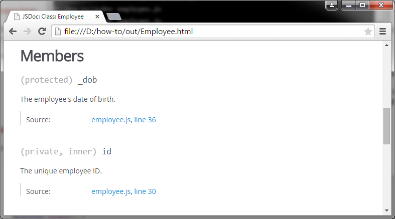
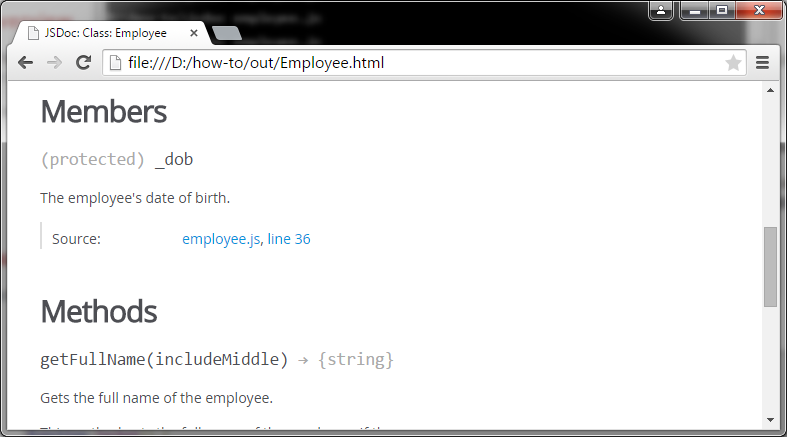

In JavaScript all properties of an object are public by default. However, you can use access specifier tags in JSDoc to indicate how each member should be treated. The @private block tag indicates a private member, the @protected block tag indicates a protected member, and the @public block tag indicates a public member. Note that the use of these tags does not affect the actual scope of the symbol.
function Employee() {
/**
* The unique employee ID.
* @private
*/
var id;
/**
* The employee's date of birth.
* @protected
*/
this._dob = new Date();
}The access specifier tag only applies to the immediate object for which it is defined. It does not apply to any members of that object. For instance, if you set a namespace to private, the members in that namespace will still be public and appear in the HTML documentation.
When you specify the @private tag, the reference for that member is excluded from the HTML documentation unless you specify the -p command-line option when running jsdoc.


Use the @ignore block tag if you do not want a symbol to appear in the documentation under any circumstances. Like the access specifier tags, the @ignore tag is only inherited by the properties of a symbol. If an object contains any members, the @ignore tag must be separately applied to the members.